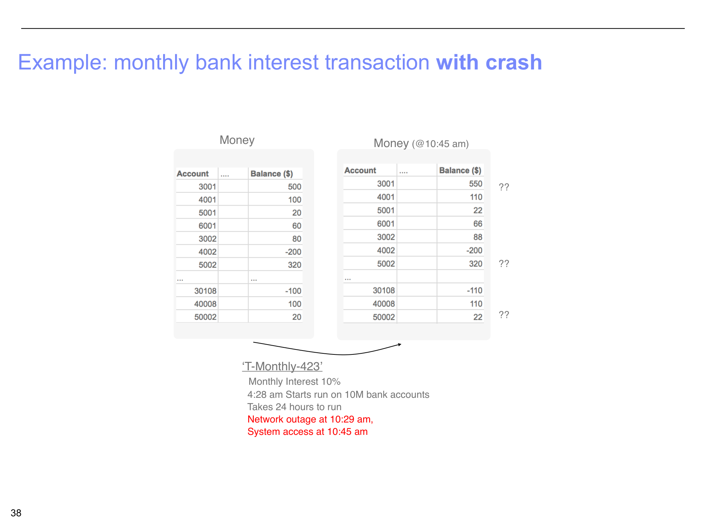

Cores, Threads, and Transactions
Where concurrency meets real hardware, and why databases need transactions
1. Concurrency vs. Parallelism
In the previous parts, we explored concurrency at the distributed systems level — load balancers, microservices, caches. Now we zoom in to Layer 8 of our Petflix stack: the individual CPU cores inside a single machine. This is where concurrency meets real hardware, and understanding the distinction between concurrency and parallelism becomes essential.
Concurrency
1,000 threads managed simultaneously. The system juggles many tasks, switching between them rapidly (context switching).
Concurrency is about managing multiple things at once. It is a software concept — you can have concurrency on a single-core machine by rapidly switching between tasks.
Parallelism
Only 16 things happen at the exact same instant — one per core. Multi-core CPUs make true parallelism real.
Parallelism is about doing multiple things at once. It requires multiple physical cores. A 16-core CPU can truly execute 16 instructions simultaneously.
Why does this distinction matter?
Because it shapes how we think about performance. Adding more threads does not always make things faster — if you already have more threads than cores, adding more just increases context-switching overhead. True speedup requires either (a) more cores for CPU-bound work, or (b) better overlap of I/O-bound work where threads spend most of their time waiting (on disk, on network) rather than computing.

2. Race Conditions, Locks, and Deadlocks
When multiple threads share memory — and they almost always do — things can go very wrong. This is the dark side of concurrency, and it connects directly to the conflict problems we studied in the serializability lecture.
Shared Memory: The Danger
Consider two threads accessing a shared buffer. Thread A is writing to the buffer while Thread B is reading from it. If these operations overlap without coordination, Thread B might read a half-written value — data that is partly old and partly new. This is a race condition: the correctness of the program depends on the unpredictable timing of thread execution.
The Solution: Locks (Mutual Exclusion)
The standard solution to race conditions is a lock (also called a mutex, for "mutual exclusion"). Before accessing shared data, a thread must acquire the lock. If another thread already holds it, the requesting thread waits. This ensures only one thread accesses the critical section at a time.
But locks introduce their own problem: Deadlock
Imagine Thread A holds Lock 1 and wants Lock 2. Thread B holds Lock 2 and wants Lock 1. Neither can proceed — both are stuck forever. This is deadlock: a circular dependency on locks that halts all progress.
Deadlock requires four simultaneous conditions: (1) mutual exclusion — locks are exclusive, (2) hold and wait — threads hold locks while requesting others, (3) no preemption — locks cannot be forcibly taken, and (4) circular wait — a cycle exists in the wait-for graph. Breaking any one condition prevents deadlock.
Real-Time Decoding: Where Deadlines Meet Concurrency
All of these concurrency challenges become especially critical in real-time video decoding. When Fatima watches a video on her phone, the decoder must produce a new frame every 33 milliseconds (for 30 fps video). Miss a single deadline and the user sees a visible stutter.
The Frame Deadline
At 30 frames per second, each frame gets exactly 33ms. The decoder must: read compressed data from the network buffer, decompress it, apply motion compensation, and write the result to the display buffer — all within that 33ms window. If a lock is held too long, or a thread gets stuck waiting, the deadline is missed.
This is why modern devices use hardware decoders — dedicated silicon that handles video decoding in a fixed, predictable time, without the variability of software threads competing for CPU cores. The hardware decoder handles the heavy lifting, freeing the CPU cores for other work.
3. The Full Stack — Concurrency at Every Layer
One of the key insights of this lecture is that concurrency is not one problem — it is a different problem at every layer. Let us map the entire Petflix stack and see what concurrency challenge each layer faces:
| Layer | Concurrency Problem |
|---|---|
| DNS Routing | Global load balancing — directing millions of users to the nearest, least-loaded data center |
| API Gateway | 10K concurrent connections per gateway instance, routing requests to the correct service |
| Microservices | Billions of internal calls/min across hundreds of services, with fan-out and cascading failures |
| Cache & DB | 400M cache ops/sec with consistency guarantees, thundering herd problems |
| CDN Box | Thousands of streams per box, each needing adaptive bitrate and buffer management |
| Pods | Write serialization — ensuring concurrent writes to the same data produce correct results |
| VMs | Bin-packing containers onto virtual machines, balancing resource utilization |
| Cores | Race conditions, deadlocks, and real-time deadlines at the hardware level |

4. OLTP vs. OLAP — Two Worlds of Databases
With the concurrency foundations in place, we now shift to the database layer. The lecture introduces a fundamental distinction: there are broadly two types of databases in the world, and they serve very different purposes.
OLTP (Online Transaction Processing)
Supports reading and writing data in real time. Provides the transactions abstraction (usually). Uses smaller, targeted queries. Think: a single bank transfer, updating a user's settings, recording a game save.
Examples: MySQL, Postgres, Redis, Cassandra, DynamoDB, Aurora/RDS
Use cases: Financial transactions, game progress, social media settings, Google Docs collaborative editing
OLAP (Online Analytical Processing)
Read-only, no real-time updates. Data is re-written in batches offline (e.g., once a day via ETL). Uses larger queries — scans, aggregates, joins across millions of rows. Think: a monthly business report, training a statistical model.
Examples: BigQuery, Snowflake, Databricks, Redshift
Use cases: Interactive data analysis, monthly business reports, designing statistical models
Why does this split exist?
Because the access patterns are fundamentally different. OLTP needs to read and write individual rows extremely fast, with strong correctness guarantees (transactions). OLAP needs to scan millions of rows efficiently for aggregation, and does not need real-time writes. Optimizing for one pattern makes you worse at the other, so the industry evolved two separate categories of systems. The course focuses on OLTP for the next several weeks, since that is where transactions and concurrency control matter most.

5. Why Transactions? The ATM Motivating Example
To motivate why we need transactions, the lecture presents a deceptively simple question: how should an ATM withdrawal work?
Approach 1: Optimistic
1. Read Balance
2. Give money to user
3. Update Balance in database
Approach 2: Pessimistic
1. Read Balance
2. Update Balance in database
3. Give money to user
Both approaches have a problem. In Approach 1, if the system crashes after giving money but before updating the balance, the user gets free money. In Approach 2, if the system crashes after updating the balance but before dispensing cash, the user loses money. Neither ordering is safe on its own.
The Scale Problem: Multiple Users, One Table
Now multiply this by thousands of concurrent users. Visa processes over 60,000 transactions per second across users and merchants worldwide. Should your $6 Starbucks purchase wait for a $10,000 bet to finish processing in Las Vegas? Absolutely not. Transactions can be fast or slow, and they are almost always unrelated to each other. The database must handle them concurrently while keeping each one correct.
Transactions Are Not Just for Finance
While bank transfers are the classic example, transactions are at the core of virtually every interactive system:
- Payment systems — stock markets, banks, ticketing
- Collaborative applications — Gmail, Google Docs (multiple people editing simultaneously)
- Gaming — saving game state, in-game purchases
- Healthcare systems — updating patient records with concurrent access
Any system where multiple users read and write shared data needs the guarantees that transactions provide.
6. Transactions — Definition and SQL
The Monthly Interest Example
Consider a bank that needs to apply 10% monthly interest to all 10 million accounts. The transaction T-Monthly-423 starts at 4:28 AM and takes 24 hours to process every account:
Normal Execution (No Crash)
The transaction reads each account balance and writes the updated value (balance * 1.1). After 24 hours, every account has been updated. The "before" table shows original balances; the "after" table shows each balance multiplied by 1.1.
For example: Account 3001 goes from $500 to $550, Account 4001 from $100 to $110, and so on through all 10 million accounts.
What happens if the system crashes midway?
Suppose there is a network outage at 10:29 AM, and the system comes back at 10:45 AM. The transaction has only processed a fraction of the accounts. Some accounts (early ones like 3001, 4001) received their interest. Others (later ones like 5002, 50002) did not. The database is now in an inconsistent state — some customers got interest and others did not.
Without transaction guarantees, you would have to figure out exactly where the process stopped and manually fix things. With transactions, the system automatically rolls back all the changes — returning every account to its original balance — and the transaction can be retried from scratch. That is atomicity in action.

Transactions in SQL
SQL provides explicit syntax for transaction boundaries:
Implicit Transactions (Ad-Hoc SQL)
In "ad-hoc" SQL (typing queries directly into a database console), each individual statement is automatically wrapped in its own transaction. A single UPDATE is one transaction. A single SELECT is one transaction. The database handles the BEGIN and COMMIT for you.
Explicit Transactions (Programmatic SQL)
In a program, you can group multiple statements into a single transaction using START TRANSACTION and COMMIT:
START TRANSACTION
UPDATE Bank SET amount = amount - 100 WHERE name = 'Bob'
UPDATE Bank SET amount = amount + 100 WHERE name = 'Joe'
COMMIT
The two UPDATE statements are bundled as one atomic unit. Either Bob loses $100 and Joe gains $100, or neither change happens. There is no scenario where Bob's money disappears without Joe receiving it.
Summary
- ✓ Concurrency vs. parallelism — concurrency is managing many tasks (1,000 threads); parallelism is executing them simultaneously (16 cores). More threads than cores means context switching, not more parallelism.
- ✓ Race conditions arise when threads access shared memory without coordination. Locks (mutual exclusion) prevent races but can cause deadlocks — circular lock dependencies where no thread can proceed.
- ✓ Real-time decoding imposes hard deadlines (33ms per frame at 30 fps). Hardware decoders provide predictable timing that software threads cannot guarantee.
- ✓ Concurrency is a different problem at every layer of the stack — from DNS load balancing down to core-level race conditions. Users should never have to know about any of it.
- ✓ OLTP vs. OLAP — two fundamentally different database paradigms. OLTP handles real-time reads/writes with transactions; OLAP handles batch analytical queries. The course focuses on OLTP.
- ✓ Transactions guarantee all-or-nothing execution. A transaction is a sequence of operations reflecting a single real-world transition — it either completes fully or is rolled back entirely.
- ✓ SQL transactions use
START TRANSACTIONandCOMMITto group multiple statements into an atomic unit. In ad-hoc SQL, each statement is implicitly its own transaction.